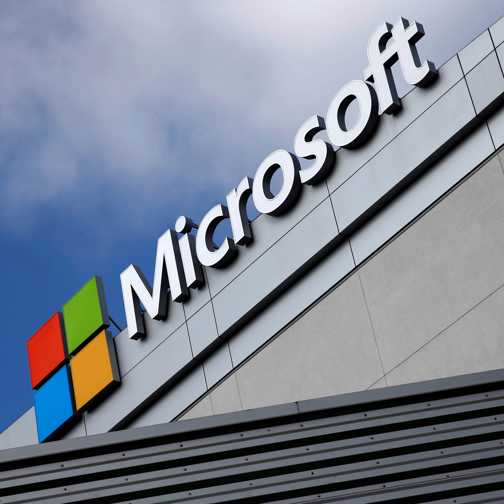

Microsoft

Location: Seattle, WA
Microsoft Corporation’s success as a global company is founded on the fulfillment of its corporate mission and vision statements. The corporate mission statement presents the business purpose and a general idea of the technology business’s strategic approach to satisfying the corporate vision statement. In this sense, Microsoft’s corporate mission specifies what the business aims to do to increase customers’ success. On the other hand, the vision statement directs the development of the computer technology business toward a desired future condition. Currently, Microsoft’s corporate vision includes what the business can do for individual and organizational customers. Also, the corporate mission is strongly aligned with the corporate vision statement. This alignment is essential to optimizing strategic decisions, especially in addressing the competitive force from multinational firms like Apple, Google, Amazon, and IBM. As the Five Forces analysis of Microsoft Corporation indicates the strong force of competitive rivalry involving these firms, the company implements its corporate mission and vision statements to strengthen its competitive advantages.
Types of roles they hire for:
- Digital Sales Specialist-Business Applications
- Azure Infrastructure and Applications Leader
- Enterprise Digital Specialist - Data & AI (Artificial Intelligence)
Job openings:
- Careers Page
At Microsoft, they have unique benefits and perks. Here's why you should consider joining their team:
At Microsoft, you’ll take risks, push boundaries, and grow more than you thought possible. And you won’t be alone on that journey. We have something special here; we put our employees at the center of everything we do, and we know that what we offer is essential not only to your work but to your life too.
In addition to world-class benefits designed to help you and your family live well, we offer competitive pay, bonuses and stock awards to eligible employees based on individual performance, as well as benefits to help you lead a healthy life, invest in your future, and enjoy your journey here at Microsoft. Empowering you. So, you can empower the world.
There may be some variances in specific benefits across regions..
- Benefits Page
Glassdoor Rating: 4.3/5
- Glassdoor Page